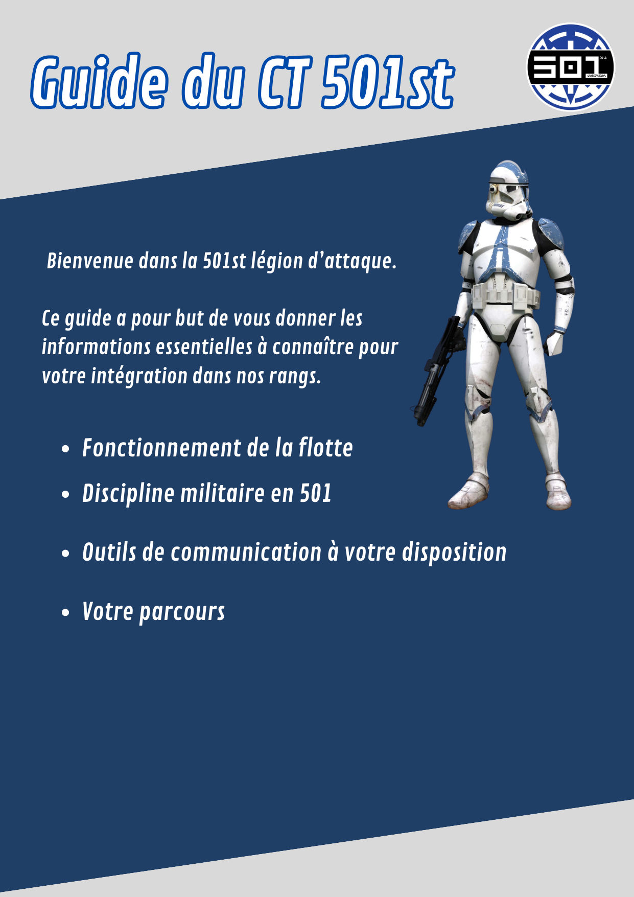
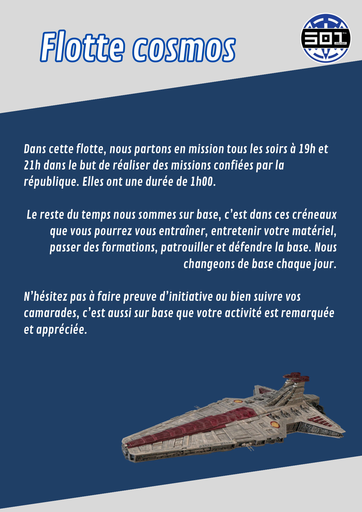
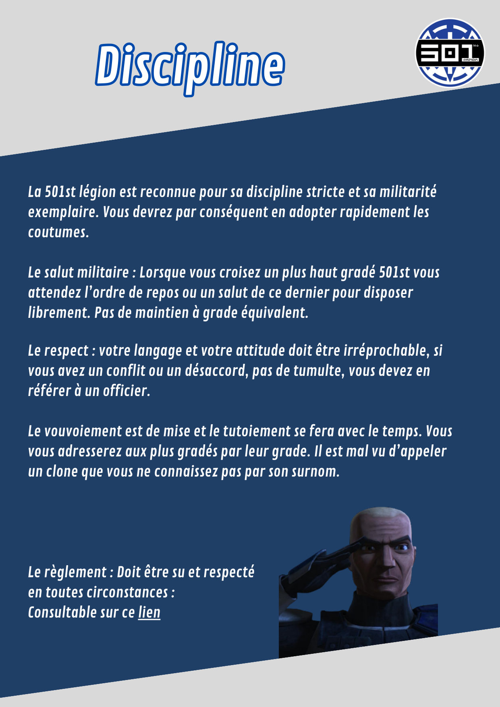
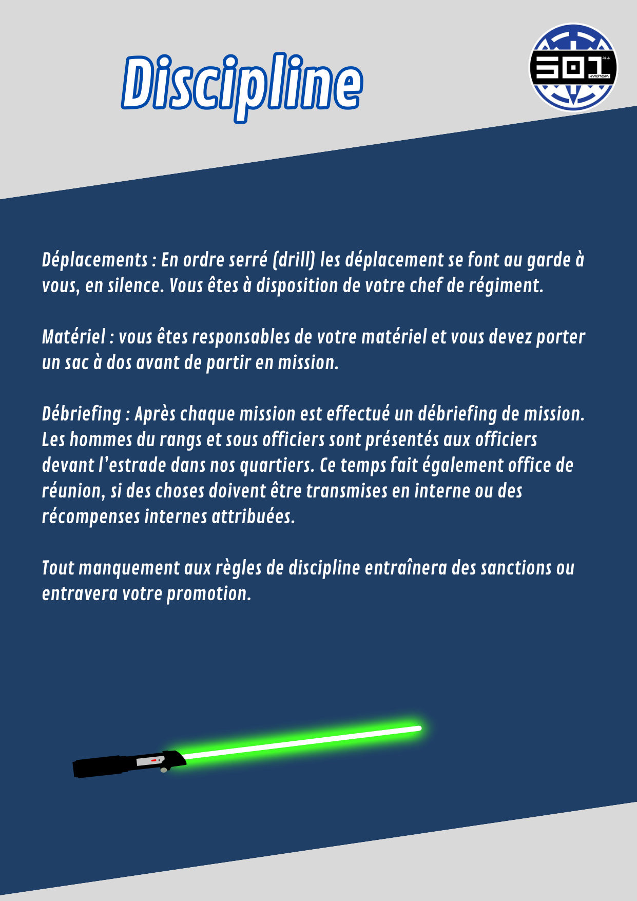
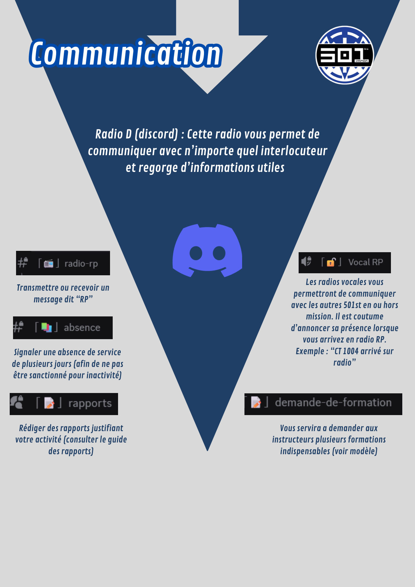
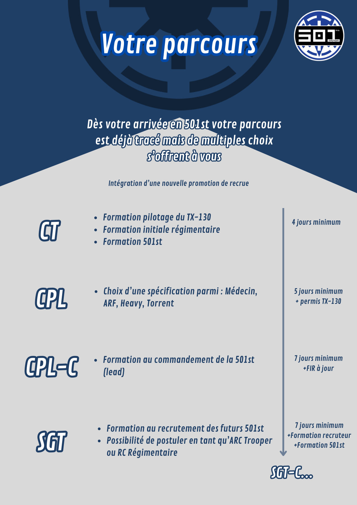

Documents utiles📁 Accueil CT
Espace d'accueil du Centre de Traitement (CT) du Site 501st.
Guide du CT 501st
Bienvenue dans la 501st légion d'attaque. Ce guide a pour but de vous donner les informations essentielles à connaître pour votre intégration dans nos rangs : fonctionnement de la flotte, discipline militaire, outils de communication et votre parcours.


Flotte Cosmos
Dans cette flotte, nous partons en mission tous les soirs à 19h et 21h dans le but de réaliser des missions confiées par la République. Elles ont une durée de 1h00.
Le reste du temps nous sommes sur base : c'est dans ces créneaux que vous pourrez vous entraîner, entretenir votre matériel, passer des formations, patrouiller et défendre la base. Nous changeons de base chaque jour.
N'hésitez pas à faire preuve d'initiative ou bien à suivre vos camarades, c'est aussi sur base que votre activité est remarquée et appréciée.

Discipline (1/2)
La 501st légion est reconnue pour sa discipline stricte et sa militarité exemplaire. Vous devrez par conséquent en adopter rapidement les coutumes.
Le salut militaire : lorsque vous croisez un plus haut gradé 501st, vous attendez l'ordre de repos ou un salut de ce dernier pour disposer librement. Pas de maintien à grade équivalent.
Le respect : votre langage et votre attitude doivent être irréprochables ; en cas de conflit ou de désaccord, pas de tumulte, vous devez en référer à un officier.
Le vouvoiement est de mise, le tutoiement se fera avec le temps. Vous vous adresserez aux plus gradés par leur grade. Il est mal vu d'appeler un clone que vous ne connaissez pas par son surnom.
Le règlement doit être su et respecté en toutes circonstances : voir la page Règlement.

Discipline (2/2)
Déplacements : en ordre serré (drill), les déplacements se font au garde-à-vous, en silence. Vous êtes à disposition de votre chef de régiment.
Matériel : vous êtes responsable de votre matériel et vous devez porter un sac à dos avant de partir en mission.
Débriefing : après chaque mission est effectué un débriefing. Les hommes du rang et sous-officiers sont présentés aux officiers devant l'estrade dans nos quartiers. Ce temps fait également office de réunion, si des choses doivent être transmises en interne ou des récompenses internes attribuées.
Tout manquement aux règles de discipline entraînera des sanctions ou entravera votre promotion.

Communication
Radio D (Discord) : cette radio vous permet de communiquer avec n'importe quel interlocuteur et regorge d'informations utiles.
- #radio-rp : transmettre ou recevoir un message dit « RP ».
- #absence : signaler une absence de service de plusieurs jours (afin de ne pas être sanctionné pour inactivité).
- #rapports : rédiger des rapports justifiant votre activité (voir Rapport Hebdomadaire).
- Vocal RP : les radios vocales vous permettent de communiquer avec les autres 501st en ou hors mission. Il est coutume d'annoncer sa présence en arrivant : par exemple « CT 1004 arrivé sur radio ».
- demande-de-formation : sert à demander aux instructeurs plusieurs formations indispensables.

Votre parcours
Dès votre arrivée en 501st, votre parcours est déjà tracé mais de multiples choix s'offrent à vous.
| Grade | Étapes | Délai |
|---|---|---|
| CT | Formation pilotage du TX-130, Formation initiale régimentaire, Formation 501st | 4 jours minimum |
| CPL | Choix d'une spécialisation parmi : Médecin, ARF, Heavy, Torrent | 5 jours minimum + permis TX-130 |
| CPL-C | Formation au commandement de la 501st (lead) | 7 jours minimum + FIR à jour |
| SGT | Formation au recrutement des futurs 501st, possibilité de postuler ARC Trooper ou RC Régimentaire | 7 jours minimum + Formation recruteur + Formation 501st |
Voir aussi le Barème de promotion complet pour la suite du parcours.